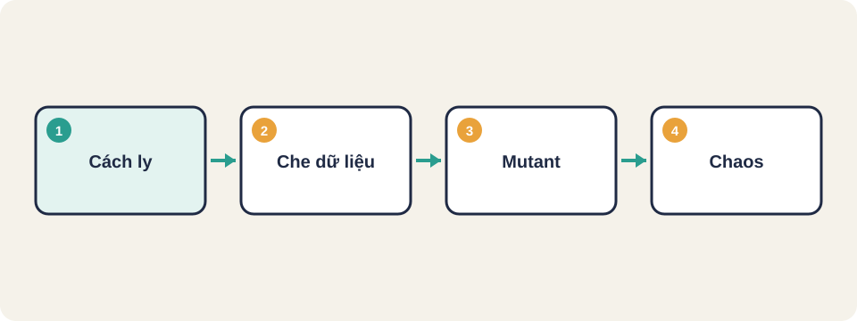
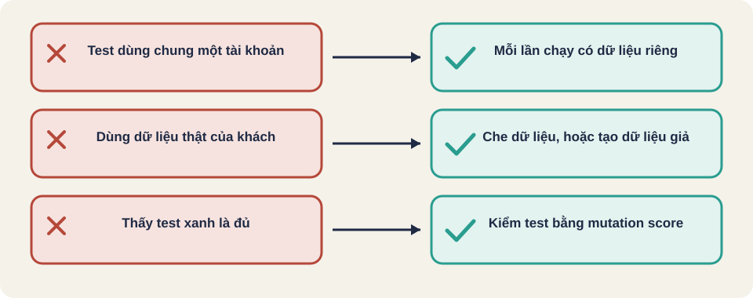

Hình vẽ gốc, dùng để minh họa thứ tự các bước chính của bài.
Vì sao test chạy đỏ rồi xanh khi chạy lại; cách cách ly và dọn dữ liệu; và kiểm thử của test bằng mutation testing, cùng ý tưởng chaos engineering.

Hình vẽ gốc, dùng để minh họa thứ tự các bước chính của bài.
Một ca đăng ký chạy đỏ, bạn chạy lại thì xanh, không ai đổi code. Nguyên nhân thường nằm ở dữ liệu dùng chung giữa các lần chạy, hoặc môi trường không sạch.
Kiến thức chung, viết lại bằng lời của người soạn bài.
Kiến thức chung, viết lại bằng lời của người soạn bài.
Thuật ngữ trong slide này: Rollback: Hủy các thay đổi đã làm trong một giao dịch, đưa dữ liệu về trạng thái ban đầu.
Kiến thức chung, viết lại bằng lời của người soạn bài.
Dùng cấu hình như mã (infrastructure as code), ví dụ Docker Compose, để ai cũng dựng được cùng một môi trường. Môi trường dùng chung lâu ngày thường bị trôi (drift): ai đó đổi một thứ mà không ghi lại.
Kiến thức chung, viết lại bằng lời của người soạn bài.
Kiến thức chung, viết lại bằng lời của người soạn bài.
Thuật ngữ trong slide này: Mutant: Một bản code đã bị sửa có chủ đích, để xem test có phát hiện được không. · Mutation score: Tỉ lệ mutant bị test bắt được, tính bằng số diệt chia tổng số mutant nhân 100.
Kiến thức chung, viết lại bằng lời của người soạn bài.
Một bộ test tạo đơn hàng dùng chung tài khoản "test01". Hãy đề xuất hai cách để mỗi lần chạy có dữ liệu riêng, và nêu một rủi ro của mỗi cách.
Có 10 mutant, test diệt được 8. Mutation score là bao nhiêu? Nếu score thấp, nên làm gì trước: thêm ca test hay sửa mutant?
Thuật ngữ trong slide này: Mutant: Một bản code đã bị sửa có chủ đích, để xem test có phát hiện được không. · Mutation score: Tỉ lệ mutant bị test bắt được, tính bằng số diệt chia tổng số mutant nhân 100.

Thuật ngữ trong slide này: Mutation score: Tỉ lệ mutant bị test bắt được, tính bằng số diệt chia tổng số mutant nhân 100.
Cách ly dữ liệu (test isolation)
Rollback
Mutant
Mutation score
Chaos engineering